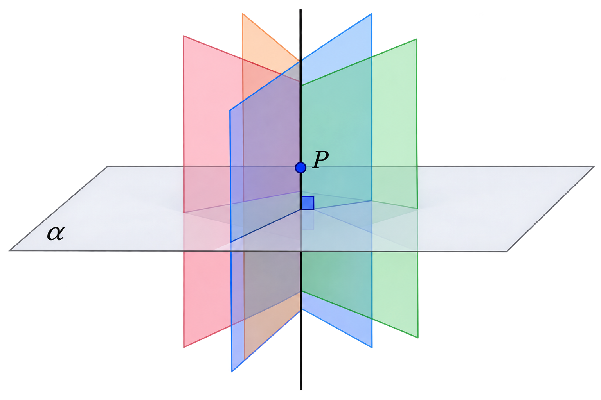
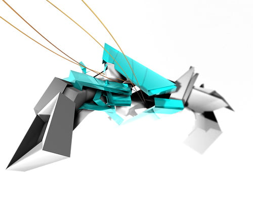

Nos vamos a ocupar ahora del caso particular en el que nos encontramos con rectas o planos perpendiculares. en este caso, el ángulo que forman los dos elementos es de \(90\)º. El coseno de \(90\)º es \(0\), por lo que las operaciones se simplifican enormemente.
En alguno de los ejercicios de apartados anteriores has observado que existen infinitas rectas que forman un ángulo de \(60\)º con un plano o puedes comprobar que existen infinitos planos que forman un ángulo de \(60\)º con otro plano. En la imagen inferior puedes observar que existen infinitos planos perpendiculares a otro dado y que pasen por un determinado punto pero, dada una recta, ¿Cuántas rectas perpendiculares a ella y que pasen por un punto existen? o dado un plano, ¿Cuántos planos perpendiculares a dicho plano y que pasen por dos puntos determinados existen? La respuesta a esta y otras preguntas la encontrarás resolviendo los ejercicios que vienen a continuación.

Ejercicio
Un diseñador gráfico ha ideado la máquina que observas en la imagen. Esta imagen va a ser utilizada en una película en 3D. Por este motivo, los programadores informáticos necesitan llevar el modelo gráfico a un modelo matemático con el que poder trabajar posteriormente para dotarlo de movimiento. En la pala que aparece a la derecha del diseño han observado que, debido a la regularidad de sus paredes, la pueden adaptar a dos planos perpendiculares. El primero de los planos lo han determinado, adaptándose a la ecuación \( \pi \equiv 3x-2y+z-3=0\). Del segundo plano, dado que tiene que coincidir con otra pieza, saben que debe pasar por los puntos \(P=(2,-5,4)\) y \(Q=(-1,-3,6)\). ¿Puedes ayudarles a determinar el segundo de los planos?

Ejercicio
Tenemos la recta \( r \), recta que pasa por el punto \( P = (2, 3, -4) \) y que tiene como vector director \( \vec{u} = (2, 1, -1) \). Calcula la recta \( s \), que la corte perpendicularmente y que pase por el punto \( Q = (-2, 5, 1) \).
Selecciona
Consideremos la recta \(r\) que pasa por el punto \(P=(1,3,0)\) y tiene como vector director el vector \(\vec{v}=(2,-1,2)\).
La recta \(s\), perpendicular a \(r\) y que pasa por el punto \(Q=(5,2,1)\) también pasa por el punto:
Ejercicio
El Burj Khalifa es un rascacielos que se encuentra situado en el distrito Downtown Burj Khalifa de la ciudad de Dubái, en Emiratos Árabes Unidos. Es la estructura más alta construida por el hombre. La construcción comenzó el 21 de septiembre de 2004, y su inauguración oficial fue el 4 de enero de 2010.
Se localiza en la parte central de las costas de Dubái. Para verlo en Google Maps pulsa Aquí.
La fecha original de apertura del edificio iba a ser el 31 de diciembre del 2008, aunque, debido a un retraso en la construcción, su finalización e inauguración se vio retrasada hasta el 4 de enero de 2010.
Para realizar la animación que has visto en el vídeo anterior se ha utilizado un dibujo-maqueta que se ha trazado en un ordenador. Como base de la maqueta se ha utilizado un plano que pasa por tres puntos del espacio \(A=(3,0,0)\), \(B=(2,1,1)\) y \(C=(-2,4,2)\). Sobre dicho plano se ha levantado el edificio utilizando como eje la recta que pasa por el punto \(P=(5,2,8)\). Calcula la ecuación de esa recta y el punto del plano que coincide con el centro del suelo del edificio.
Ejercicio
Hallar la ecuación de la recta, en forma paramétrica, que pasa por el punto \( P=(1,2,-1) \), es paralela al plano \( \pi \equiv 2x+y-z=3 \) y es perpendicular a la recta \( r \equiv \begin{cases} 3x+z=7 \\ x+4y+z=8 \end{cases} \)